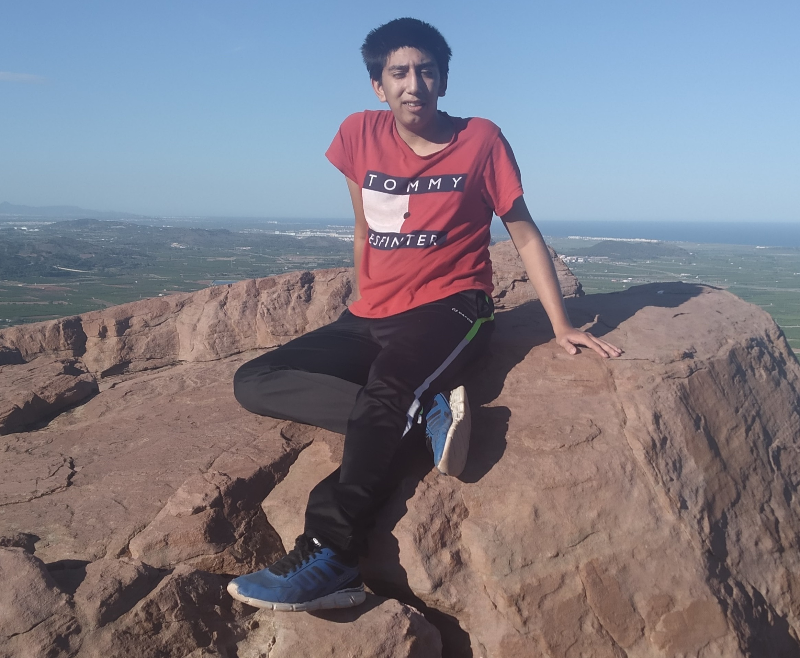

Sobre Mi
Foto de mi:
Bueno este soy yo , un chico de 19 años que tiene un alma curiosa que va viajando por todo el mundo , descubriendo sus sorpresas y aprendiendo constantemente de otras culturas , a por cierto soy de España
Imagenes de los viajes
Todas las fotos de cada aventura.
Viaje a Ecuador
Viaje a Ecuador, Marzo 7, 2012

Más información ...
Un viaje de dos meses donde recorrí todo el país visitando muchos lugares hermosos y monumentos culturales historicos de la región . Tambien visité bastantes festividades locales de cada región y su gastronomia . Fue un viaje épico , recomiendo mucho visitar Ecuador , es muy rico en paisaje , historia y comida.
Excursión en barco
Excursión en barco, Mayo 2, 2017
Más información ...
Fue un curso intensivo en mi país donde me enseñaron junto a mi grupo a conducir diferentes tipos de barcos . Fue una experiencia muy entretenida e interesante . Aprendí a manejar cayak , velero y lancha a motor , la verdad me encantó , desde ese momento me encantan los barcos y me gusta manejarlos.
Expedición en las montañas
Expedición en las montañas, Sep 20, 2021
Más información ...
Explorar las tierras que hay a vuestro alrededor es una experiencia refrescante y relajante y a la vez puede que dificil , me encanta con mi familia a veces ir a alguna ruta de senderismo cercana a nustra vida habitual , la naturaleza tan cerca y tan lejor descubriendo lo que tienes al lado sin duda una experiencia recomendable.